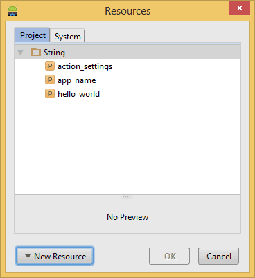
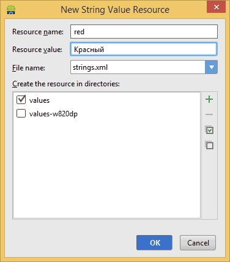
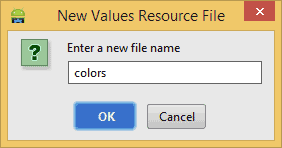
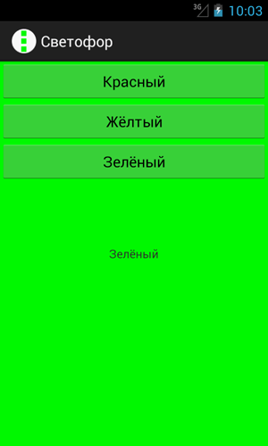

/* Моя кошка замечательно разбирается в программировании. Стоит мне объяснить проблему ей - и все становится ясно. */
John Robbins, Debugging Applications, Microsoft Press, 2000

/* Моя кошка замечательно разбирается в программировании. Стоит мне объяснить проблему ей - и все становится ясно. */
John Robbins, Debugging Applications, Microsoft Press, 2000
Для закрепления навыков создадим приложение, чуть посложнее предыдущего, а также познакомимся с другими приёмами программирования.
В качестве примера напишем программу под условным названием «Светофор». Интерфейс программы будет выглядеть следующим образом. На красном экране расположены три кнопки и одна текстовая надпись. При нажатии кнопок фон программы будет меняться на соответствующий свет, который закреплён за определённой кнопкой. Я попробую вам показать решение задачи с разных сторон, чтобы вы почувствовали себя увереннее.
Первые шаги вполне очевидны. Создаём новый проект на основе "Hello, World" и перетаскиваем с панели инструментов две (пока) кнопки. Далее растягиваем их по ширине экрана. Найдите на панели инструментов над формой кнопку Toggle Fill Width, на которой изображена двусторонняя стрелка ↔. Также можете это сделать вручную - для этого в окне свойств присваиваем свойству Width значение match_parent. Данному свойству соответствует атрибут android:layout_width.
В окне Outline выделите строку button1. У вас должно появиться окно свойств Properties. Давайте избавимся от стандартных идентификаторов, а будем сразу приучаться давать осмысленные имена. Например, для первой кнопки присвоим свойству Id значение @+id/buttonRed вместо стандартного @+id/button1, а для второй кнопки - @+id/buttonYellow.
Теперь попробуем создать третью кнопку не через визуальное проектирование, а через код. Для этого в главном окне переключитесь с вкладки Graphical Layout на вкладку activity_main.xml. Здесь вы увидите XML-разметку программы, в том числе и код для двух кнопок.
Наверное, вы уже догадались, как можно создать третью кнопку. Нужно просто взять за образец код любой из двух кнопок и добавить под ними новую строчку перед закрывающим тегом </RelativeLayout> (не забудьте изменить идентификатор и атрибут android:layout_below):
<RelativeLayout xmlns:android="http://schemas.android.com/apk/res/android"
xmlns:tools="http://schemas.android.com/tools"
android:layout_width="match_parent"
android:layout_height="match_parent" >
<TextView
android:layout_width="wrap_content"
android:layout_height="wrap_content"
android:layout_centerHorizontal="true"
android:layout_centerVertical="true"
android:text="@string/hello_world" />
<Button
android:id="@+id/buttonRed"
android:layout_width="match_parent"
android:layout_height="wrap_content"
android:layout_alignParentLeft="true"
android:layout_alignParentTop="true"
android:text="Button" />
<Button
android:id="@+id/buttonYellow"
android:layout_width="match_parent"
android:layout_height="wrap_content"
android:layout_alignParentLeft="true"
android:layout_below="@+id/buttonRed"
android:text="Button" />
<Button
android:id="@+id/buttonGreen"
android:layout_width="match_parent"
android:layout_height="wrap_content"
android:layout_alignParentLeft="true"
android:layout_below="@+id/buttonYellow"
android:text="Button" />
</RelativeLayout>
Настоятельно рекомендую не копировать строку, а написать ее вручную. Заодно вы увидите, как работает подсказка при наборе текста. Для ускорения набора после ввода нескольких символов можно использовать комбинацию клавиш Ctrl+Space, чтобы среда разработки предложила подходящий вариант для продолжения. Выбрав нужный вариант, нажмите Enter, чтобы вставить готовое выражение.
Теперь нам нужно заменить текст на кнопках Button на слова Красный, Жёлтый и Зелёный. На прошлом уроке мы просто присвоили свойству Text нужную строку. Но на самом деле это неправильный подход и даже среда разработки выводит предупреждающие значки у кнопок. По правилам, строки нужно хранить в строковых ресурсах. Подобный подход даёт разработчику множество преимуществ, в частности, быструю локализацию приложения. Считайте это стандартом, которого нужно придерживаться.
Процесс создания строковых ресурсов очень прост. Переключитесь обратно в режим Design и выберите кнопку buttonRed. В окне свойств выделите свойство Text. Во второй колонке отобразится кнопка с троеточием. Щёлкните на кнопке. У вас откроется диалоговое окно Resource Chooser.

Нажмите на кнопку New Resource для создания нового строкового ресурса и выберите New String Value. В новом окне New String Value Resource в первом поле Resource Name введите название ресурса, например, red, а во втором поле Resource Value введите текст для кнопки (напр. Красный). Остальные поля не трогаем. Аналогичным образом поступите с другими двумя кнопками (Жёлтый и Зёленый).

Программно можно добиться такого же результата, отредактировав файл strings.xml, который находится в папке res/values вашего проекта. Сейчас он может выглядеть так.
<?xml version="1.0" encoding="utf-8"?>
<resources>
<string name="app_name">TrafficLight</string>
<string name="hello_world">Hello world!</string>
<string name="action_settings">Settings</string>
<string name="red">Красный</string>
<string name="yellow">Жёлтый</string>
<string name="green">Зелёный</string>
</resources>
Мы совсем забыли про элемент TextView. Исправим упущение. Пусть на нём выводится текст, извещающий о текущем цвете фона приложения. Так как в ресурсах у нас уже есть слова Красный, Жёлтый и Зелёный, изначально предназначенные для кнопок, то мы не будем создавать новые строковые ресурсы, а воспользуемся готовыми наработками. По умолчанию у нас используется красный цвет. В окне свойств выбираем свойство Text для TextView и нажимаем кнопку с троеточием для вызова знакомого диалогового окна. На этот раз мы не будет щелкать на кнопке New Resource, а сразу выберем строку red, которая, как мы помним, содержит текст Красный и щёлкнем кнопку OK (можно сделать сразу двойной щелчок на строке).
Переключитесь в режим редактора кода и посмотрите, как теперь выглядит описание для TextView.
<TextView
android:layout_width="wrap_content"
android:layout_height="wrap_content"
android:layout_centerHorizontal="true"
android:layout_centerVertical="true"
android:text="@string/red" />
Рекомендую постоянно переключаться в этот режим и смотреть, что происходит в коде. Это позволит вам увереннее разбираться в коде и читать чужой код. Как правило, новички предпочитают работать через визуальные инструменты, а программисты с опытом самостоятельно пишут практически весь код. Нужно найти разумный баланс между двумя подходами. Всё придет со временем.
Со строками вроде разобрались. Давайте теперь в ресурсах зададим цвета для фона программы. Ресурсы для цветов принято хранить в отдельном файле colors.xml, хотя технически никто не запрещает хранить их в том же файле strings.xml. Сейчас у нас файла для ресурсов цвет нет, поэтому создадим его сами. Делаем щелчок правой кнопкой мыши на папке values и выбираем New | Values resource file. В диалоговом окне вводим colors (суффикс .xml вводить не обязательно)

Добавим ресурс красного цвета между тегами resources:
<color name="yellowColor">#FFFF00</color>
Слева появится жёлтый квадрат, по нему легко видеть цвет заданного ресурса.
По такому же принципу добавьте зелёный цвет.
<color name="greenColor">#FF00FF00</color>
Если вам знаком такой формат цвета, то трудностей добавление новых цветов подобным способом вам не доставит. Если нужно выбрать более сложный цвет, то проще воспользоваться мастером, как мы это делали в уроке "Hello Kitty", когда выбирали розовый цвет, а затем полученный цвет скопировать в ресурсы.
Определив в ресурсах все необходимые цвета, можно сразу присвоить красный цвет для контейнера RelativeLayout. В окне свойств находим для данного элемента свойство Background и через редактор ресурсов устанавливаем ему значение @color/redColor. Либо вручную добавьте строчку android:background="@color/redColor" для тега RelativeLayout.
Общий каркас приложения завершен. У нас есть три кнопки с соответствующими текстами, текстовая надпись со словом Красный, и красный фон, используемый в контейнере RelativeLayout. Пора приступать к программной логике программы. А пока можно запустить приложение в эмуляторе, чтобы убедиться, что мы не сделали ошибок в разметке.
Наша задача - обработать щелчки трёх кнопок и менять цвет фона приложения, а также текст в TextView. На прошлом занятии мы уже познакомились с удобным способом обработки события onClick. Давайте закрепим пройденный материал и повторим тот же код для первой кнопки. Пропишем вручную событие onClick в теге Button:
android:onClick="onRedButtonClick"
Вспоминаем - в режиме Text помещаем курсор на названии метода и нажимаем комбинацию Alt+Enter, чтобы создать заготовку щелчка первой кнопки в классе MainActivity.
Объявим переменные в классе и получим к ним доступ в методе onCreate():
// до метода onCreate()
private TextView mTextViewInfo;
private RelativeLayout mRelativeLayout;
// в методе onCreate()
mRelativeLayout = (RelativeLayout)findViewById(R.id.relativeLayout);
mTextViewInfo = (TextView)findViewById(R.id.textView);
Если вы копируете этот код с моего сайта и вставляете у себя, то названия классов будут выделены красным цветом. Нажимаем комбинацию Alt+Enter и импортируем необходимые классы.
Также обратите внимание, что мы обращаемся к компонентам RelativeLayout и TextView по идентификаторам, которые ещё не создавали. Если вы до этого не присвоили идентификаторы для RelativeLayout и TextView, то вернитесь в файл activity_main.xml и добавьте атрибуты android:id="@+id/relativeLayout" и android:id="@+id/textView". На будущее старайтесь сразу присваивать идентификаторы элементам, с которыми придётся работать в коде.
Пишем код для щелчка кнопки с надписью "Красный":
public void onRedButtonClick(View view) {
mTextViewInfo.setText(R.string.red);
mRelativeLayout.setBackgroundColor(getResources().getColor(R.color.redColor));
}
Мы обращаемся к созданным ресурсам через специальный класс R и через точку указываем тип ресурсов, а затем имя ресурса.
Для кнопки "Зелёный" напишите код самостоятельно, добавив метод onGreenButtonClick().
Для кнопки "Жёлтый" напишем код в традиционной манере через прослушку OnClickListener.
Button yellowButton = (Button)findViewById(R.id.buttonYellow);
yellowButton.setOnClickListener(new View.OnClickListener() {
@Override
public void onClick(View view) {
mTextViewInfo.setText(R.string.yellow);
mRelativeLayout.setBackgroundColor(getResources().getColor(R.color.yellowColor));
}
});
Запускаем приложение и щёлкаем по кнопкам - текст в надписи и фон в приложении должны меняться в соответствии с нажатой кнопкой.

Полный текст кода будет выглядеть следующим образом:
// Если этот код работает, его написал Александр Климов,
// а если нет, то не знаю, кто его писал.
package ru.alexanderklimov.trafficlight;
import android.app.Activity;
import android.os.Bundle;
import android.view.Menu;
import android.view.MenuItem;
import android.view.View;
import android.widget.Button;
import android.widget.RelativeLayout;
import android.widget.TextView;
public class MainActivity extends Activity {
private TextView mTextViewInfo;
private RelativeLayout mRelativeLayout;
@Override
protected void onCreate(Bundle savedInstanceState) {
super.onCreate(savedInstanceState);
setContentView(R.layout.activity_main);
mRelativeLayout = (RelativeLayout)findViewById(R.id.relativeLayout);
mTextViewInfo = (TextView)findViewById(R.id.textView);
Button yellowButton = (Button)findViewById(R.id.buttonYellow);
yellowButton.setOnClickListener(new View.OnClickListener() {
@Override
public void onClick(View view) {
mTextViewInfo.setText(R.string.yellow);
mRelativeLayout.setBackgroundColor(getResources().getColor(R.color.yellowColor));
}
});
}
public void onRedButtonClick(View view) {
mTextViewInfo.setText(R.string.red);
mRelativeLayout.setBackgroundColor(getResources().getColor(R.color.redColor));
}
public void onGreenButtonClick(View view) {
mTextViewInfo.setText(R.string.green);
mRelativeLayout.setBackgroundColor(getResources().getColor(R.color.greenColor));
}
}
В качестве домашнего задания упростите код для трёх кнопок, создав для них общий метод onClick() (почитайте статью про кнопки).
Поговорим о значках. По умолчанию студия использует изображение зелёного робота в качестве значка для вашей программы. Откройте в студии папки res/drawable-hdpi, res/drawable-mdpi, res/drawable-xhdpi, res/drawable-xxhdpi. В каждой из этих папок есть файл с одинаковым именем ic_launcher.png. Вся разница между этими файлами заключается в размерах. В зависимости от разрешения экрана на устройстве система выбирает наиболее подходящий по размеру изображение и выводит его в качестве значка в заголовке приложения и на домашнем экране. Самый простой вариант заменить стандартное изображение на своё - создать своё изображение и заменить им имеющийся значок. Рекомендуется создавать под каждое разрешение свой значок. Причем здесь указаны не все варианты. Тогда вам нужно создать самостоятельно папку, например, drawable-xxxhdpi и разместить там картинку нужного размера. Если вы пропустите какой-то размер, то система попробует взять какой-нибудь значок с этим именем из другой папки и смаштабировать его. Но лучше так не делать.
Если вы не хотите менять существующие стандартные значки, а хотите использовать значки под другим именем, то в этом случае подготовьте все необходимые размеры, разместите их во всех папках drawable- под своим именем, а затем в манифесте замените строчку у атрибута android:icon:
<application
android:allowBackup="true"
android:icon="@drawable/ic_launcher_cat"
android:label="@string/app_name"
android:theme="@style/AppTheme" >
В состав студии входит набор предопределённых значков и генератор собственных значков. Чтобы его увидеть на экране, выберите в меню File | New | Image Asset.
Откроется диалоговое окно, где вы можете указать в качестве источника файл на компьютере, вариант из клипарта или набор символов. Также вы можете задать форму значка, цвет фона и прочие параметры. Уверен, что вы разберётесь самостоятельно.
Кроме значков для различных разрешений, генератор создаст дополнительный файл с суффиксом -web, который будет скопирован в папку main. Этот файл используется для Google Play, когда будете размещать приложение в магазине приложений и давать описание к нему.